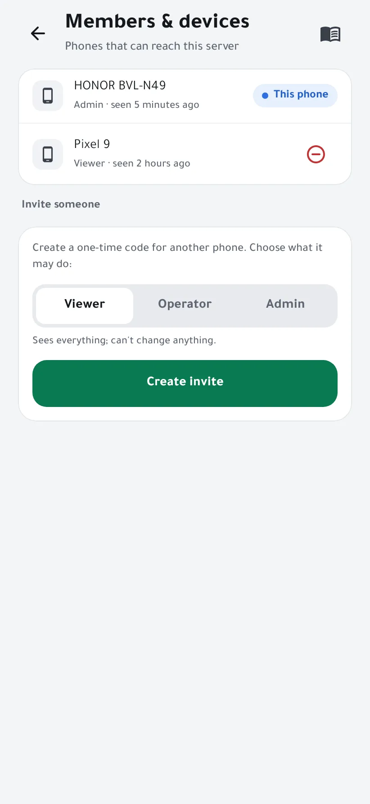
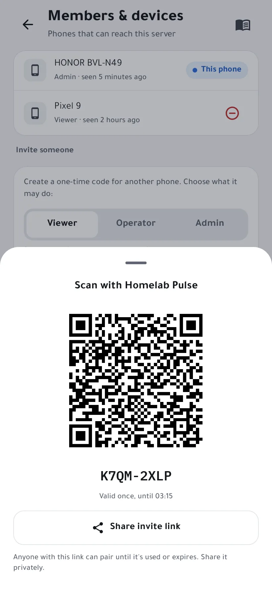

Invite someone to your server
Give another phone access to your server, whether a family member's or your own tablet, with a one-time code, and choose what it may do.
Roles
- Viewer sees everything and can't change anything.
- Operator can also restart containers and services and acknowledge alerts.
- Admin has full control: terminal, power, integrations and members.
-
Create the invite
On an admin phone, open Settings → Members & devices. Under Invite someone, pick the role and tap Create invite.

-
Scan it with the other phone
On the other phone, install Homelab Pulse, open Add a server → Scan QR code, and scan the code. It works once, until the time shown.
Not in the same room? Share invite link sends it as a link, but anyone holding it can pair until it's used or expires, so share it privately.

-
Manage access
The new phone appears in Members & devices. To cut it off, tap the remove icon next to it: it's signed out at once, and its open streams and terminal sessions end.
Pair the new phone while it's on the same network as the server. Every change it makes is recorded in the Audit log.